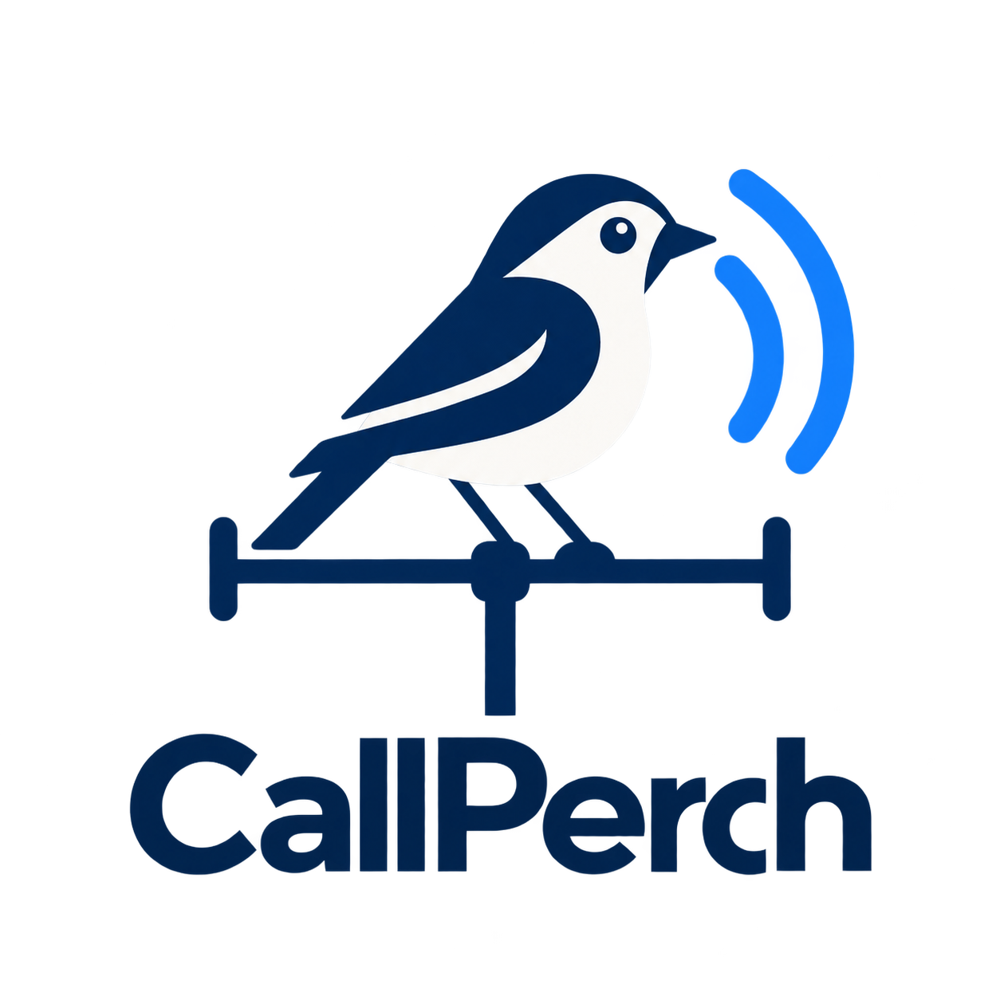
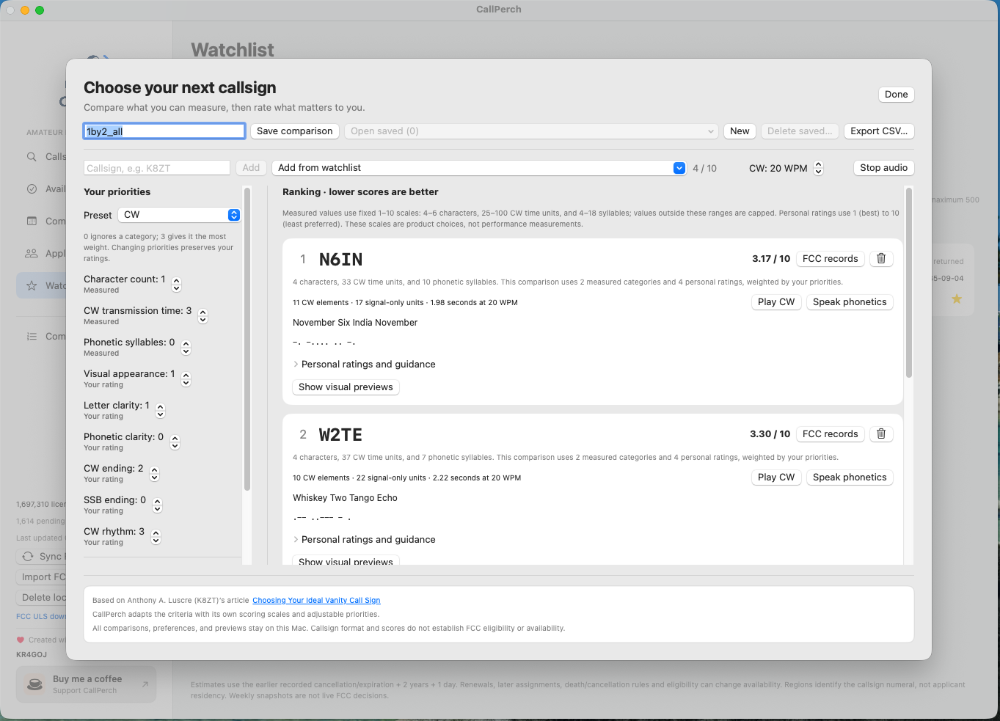

Explore the records
Search callsigns and licensee names. Inspect license history, applications, and requested vanity choices.
Explore research features →
CallPerchAmateur radio callsign researchA better perch for your next callsign
Explore FCC records, track estimated callsign availability, and compare your favorites—all in one desktop app.
Free to use. No account or API key required.

From curiosity to a shortlist
Search callsigns and licensee names. Inspect license history, applications, and requested vanity choices.
Explore research features →Browse upcoming release estimates and star callsigns for your watchlist. Use reminders to plan your next check.
Learn about the watchlist →Compare up to ten callsigns with personal ratings, adjustable priorities, CW and phonetic playback, and QSL previews.
Explore comparison →Make room for your next call
Choose a published package that matches your operating system and architecture. Release notes describe requirements and testing status.
Check each release’s assets for available Mac, Linux, or Windows downloads. Candidate builds may require additional testing.
Linux source & build instructions →